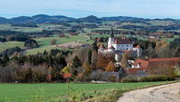
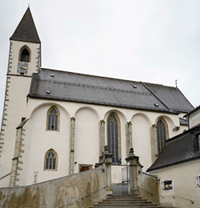
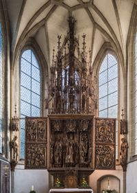
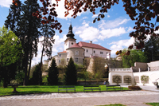

Kefermarkt ist eine kleine Gemeinde in Oberösterreich, Österreich. Sie liegt im politischen Bezirk Freistadt und hat eine Fläche von etwa 24 Quadratkilometern. Die Gemeinde hat eine lange Geschichte und ist bekannt für ihre historische Architektur, insbesondere die Stiftskirche Kefermarkt.
Kefermarkt is a small community in Upper Austria, Austria. It is located in the political district of Freistadt and has an area of around 24 square kilometers. The community has a long history and is known for its historic architecture, particularly the Kefermarkt collegiate church.
| Geographie und Lage Kefermarkt liegt im Mühlviertel, einer Region im nördlichen Teil von Oberösterreich. Die Gemeinde erstreckt sich entlang des Flusses Feldaist und wird von sanften Hügeln und Wäldern umgeben. Die Landschaft ist geprägt von landwirtschaftlichen Flächen, kleinen Dörfern und einigen größeren Siedlungen. |
 |
Geography and location
Kefermarkt is located in the Mühlviertel, a region in the northern part of Upper Austria. The municipality stretches along the Feldaist River and is surrounded by rolling hills and forests. The landscape is characterized by agricultural areas, small villages and some larger settlements.
Kefermarkt is located in the Mühlviertel, a region in the northern part of Upper Austria. The municipality stretches along the Feldaist River and is surrounded by rolling hills and forests. The landscape is characterized by agricultural areas, small villages and some larger settlements.
|
Geschichte Die Geschichte von Kefermarkt reicht bis ins Mittelalter zurück. Im Jahr 1138 wurde das Stift Kefermarkt gegründet, das zu einem wichtigen geistlichen und kulturellen Zentrum der Region wurde. Die Stiftskirche Kefermarkt, die zwischen dem 15. und 16. Jahrhundert erbaut wurde, ist ein herausragendes Beispiel gotischer Architektur in Österreich. |
 |
English1
Im Laufe der Jahrhunderte spielte Kefermarkt eine Rolle in verschiedenen historischen Ereignissen, darunter Kriege und politische Veränderungen. Die Gemeinde blieb jedoch größtenteils ländlich geprägt und bewahrte ihren Charme und ihre Traditionen.
Over the centuries, Kefermarkt has played a role in various historical events, including wars and political changes. However, the community remained largely rural and retained its charm and traditions.
| Sehenswürdigkeiten Die Stiftskirche Kefermarkt ist zweifellos das bekannteste Wahrzeichen der Gemeinde. Sie beeindruckt mit ihrer imposanten Architektur, den kunstvollen Altären und Fresken sowie der berühmten Kefermarkter Orgel, einer der ältesten spielbaren Orgeln Europas. |
 |
Sightseeing attractions
The Kefermarkt collegiate church is undoubtedly the community's best-known landmark. It impresses with its imposing architecture, the artistic altars and frescoes as well as the famous Kefermarkt organ, one of the oldest playable organs in Europe.
The Kefermarkt collegiate church is undoubtedly the community's best-known landmark. It impresses with its imposing architecture, the artistic altars and frescoes as well as the famous Kefermarkt organ, one of the oldest playable organs in Europe.
| Neben der Stiftskirche gibt es in Kefermarkt noch weitere historische Gebäude und Denkmäler. Dazu gehören das Schloss Weinberg, das Renaissanceschloss Weinberg, die Pfarrkirche Kefermarkt und verschiedene traditionelle Bauernhöfe. |  |
In addition to the collegiate church, there are other historical buildings and monuments in Kefermarkt. These include Weinberg Castle, the Weinberg Renaissance Castle, the Kefermarkt parish church and various traditional farms.
Kultur und Veranstaltungen
Kefermarkt ist stolz auf seine lebendige Kultur- und Brauchtumsszene. Jedes Jahr finden verschiedene Veranstaltungen statt, die Besucher aus nah und fern anlocken. Dazu zählen das Kefermarkter Marktfest, bei dem regionale Produkte präsentiert werden, sowie Konzerte, Theateraufführungen und Ausstellungen.
Kefermarkt ist stolz auf seine lebendige Kultur- und Brauchtumsszene. Jedes Jahr finden verschiedene Veranstaltungen statt, die Besucher aus nah und fern anlocken. Dazu zählen das Kefermarkter Marktfest, bei dem regionale Produkte präsentiert werden, sowie Konzerte, Theateraufführungen und Ausstellungen.
Culture and events
Kefermarkt is proud of its lively culture and customs scene. Various events take place every year, attracting visitors from near and far. These include the Kefermarkt market festival, where regional products are presented, as well as concerts, theater performances and exhibitions.
Kefermarkt is proud of its lively culture and customs scene. Various events take place every year, attracting visitors from near and far. These include the Kefermarkt market festival, where regional products are presented, as well as concerts, theater performances and exhibitions.
Freizeitaktivitäten
Die Umgebung von Kefermarkt bietet zahlreiche Möglichkeiten für Outdoor-Aktivitäten. Wanderwege führen durch die malerische Landschaft des Mühlviertels, und entlang des Flusses Feldaist kann man angeln oder gemütliche Spaziergänge unternehmen. In der näheren Umgebung gibt es zudem einige Badeseen und Naturparks.
Die Umgebung von Kefermarkt bietet zahlreiche Möglichkeiten für Outdoor-Aktivitäten. Wanderwege führen durch die malerische Landschaft des Mühlviertels, und entlang des Flusses Feldaist kann man angeln oder gemütliche Spaziergänge unternehmen. In der näheren Umgebung gibt es zudem einige Badeseen und Naturparks.
Free time activities
The area around Kefermarkt offers numerous opportunities for outdoor activities. Hiking trails lead through the picturesque landscape of the Mühlviertel, and you can go fishing or take leisurely walks along the Feldaist River. There are also several swimming lakes and nature parks in the surrounding area.
The area around Kefermarkt offers numerous opportunities for outdoor activities. Hiking trails lead through the picturesque landscape of the Mühlviertel, and you can go fishing or take leisurely walks along the Feldaist River. There are also several swimming lakes and nature parks in the surrounding area.